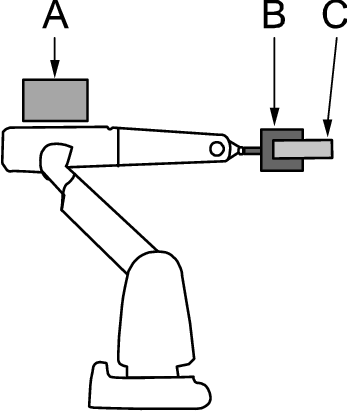
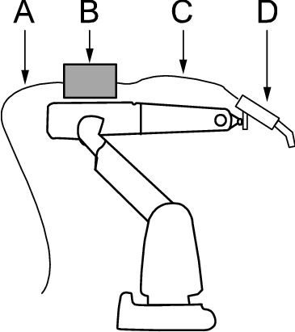
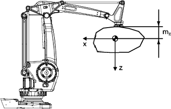

服务例行程序 LoadIdentify 用于自动识别安装于机器人之上的载荷数据。您也可以手动输入数据，但所需信息可能难以计算。
运行 LoadIdentify 有一些注意事项。这些内容将在后页中详细介绍。在本章中也提供了错误处理和限制方面的信息。
 | 警告 重要的是，始终定义实际工具负载以及使用时机械臂（例如，抓取部分）的有效负载。负载数据定义不正确可能会导致机械臂机械结构过载。 指定不正确的负载数据时，其常常会引起以下后果：
控制器持续监测负载，如果负载高于预期则写入事件日志。事件日志存储和记录都在控制器存储器中。 |
LoadIdentify 可以测定工具载荷和有效载荷。可确认的数据是质量、重心和转动惯量。

A | 上臂载荷 |
B | 工具载荷 |
C | 有效载荷 |
在进行有效载荷的载荷识别前，请首先确保已经正确定义了工具载荷数据（例如通过对此工具运行LoadIdentify）。
要确定B和/或C的质量，轴3必须执行一些动作。这意味着，要测定质量，上臂载荷必须已知，且正确定义。
如果上臂负载A已经安装，要改进精确度，输入B和C的已知质量并在识别时选择已知质量方法。
要执行测定，机器人需按特定模式移动载荷，然后计算数据。要移动的轴是 3、 5 和 6。在测定位置，轴 3 的动作幅度约 ±3 度，轴 5 的动作幅度约为 ±30 度。而轴 6 在两个配置点之间执行动作。
配置角度的最佳值是 +90 度或 -90 度。

A | 配置 1（开始位置） |
B | 配置角度 |
C | 配置 2 |
执行载荷测定的最佳方式是在机器人未安装手臂载荷的情况下进行测定。如果无法做到这一点，仍可获得理想的精度。例如，考虑下图中的机器人，其身上安装了弧焊设备。

A | 电缆 1 |
B | 载荷 1 |
C | 电缆 2 |
D | 载荷 2 |
如果我们要使用载荷测定获取载荷 2 的数据，则最为重要的事情是确保正确定义上臂载荷，特别是机器人手臂上的质量和重心。手臂载荷包括除工具载荷和有效载荷之外的安装于机器人身上的所有东西。在上图中，线缆 1、线缆 2 和负荷 1 都包含在手臂载荷中，其总重和重心必须计算得出。
执行载荷测定时，应断开电缆 2，因为它会对载荷 2 施加额外压力。在此外力存在的情况下测定载荷 2 时，结果可能与正确载荷大相径庭。最好是将电缆 2 与载荷 2 断开，并将其固定于上臂。如果无法做到这一点，也可将也可在载荷 1 处断开电缆，并将其固定于上臂，并尽量减小对载荷 2 的合力。
运行工具载荷的 LoadIdentify 服务例行程序之前，请确保：
在微动控制菜单中已选定工具
工具已正确安装
轴 6 接近水平
要测定质量，需确定上臂载荷。
轴 3、 5 和 6 不要过于接近其相应的工作范围限制
速度设置为 100%。
系统处于手动模式.
注意 LoadIdentify 不能用于 tool0。
运行有效载荷的 LoadIdentify 服务例行程序之前，请确保：
工具和有效载荷已正确安装。
轴 6 接近水平
工具载荷已知（首先运行工具 LoadIdentify）。
要测定有效载荷质量，需确定上臂载荷。
使用移动 TCP 时，工具必须被校准 (TCP)。
使用固定 TCP 时，相应的工件必须被校准（用户框架和工件框架）。
轴 3、 5 和 6 不要过于接近其相应的工作范围限制
速度设置为 100%。
系统处于手动模式.
注意 LoadIdentify 不能用于 load0。
要启动载荷测定服务例行程序，您必须在手动模式下具有活动程序，并且您要测定的工具和有效载荷必须已定义且在 Jogging（微动控制）窗口内处于活动状态。
 | 提示 始终在电机冷却（未预热）时运行负载识别。 |
操作 | Information | |||
1 | 从程序编辑器启动LoadIdentify。按下三位使动装置，然后按下FlexPendant上的Start（启动）按钮。 | 有关如何启动服务例行程序的详情，请参阅 运行服务例行程序 。 | ||
2 | 点击 OK（确定）确认当前路径将被清除且程序指针将丢失。 | 点击 Cancel（取消）然后点击 Cancel Call Rout（取消调用例行程序）以退出服务例行程序而不松开程序指针。 | ||
3 | 点击 Tool（工具）或 Payload（有效载荷）。 | |||
4 | 点击 OK（确定）确认正确的工具和/或有效载荷在微动控制菜单中处于活动状态，并且工具载荷/有效载荷已正确安装。 | 如果不正确，则松开三位使动装置，选择微动控制菜单中的正确工具/有效载荷。然后返回 LoadIdentify，按下三位使动装置，然后按下启动。点击重试确认新工具/有效是否正确。 | ||
5 | 测定工具载荷时，确认工具已活动。 测定有效载荷时，确认有效载荷工具已活动且已校准。 | 请参阅步骤NaN。 | ||
6 | 测定固定 TCP 情形下的有效载荷时，确认正确工件处于活动状态，而且（最好）已校准。如果正确，点击 OK（确定）确认。 | 请参阅步骤NaN。 | ||
7 | 选择测定方法。如果您选择的方法假定质量已知，请注意您使用的工具/有效载荷必须具备正确的已定义质量。点击 OK（确定）确认。 | |||
8 | 选择配置角度。最佳角度是 +90 或 -90 度。如果无法做到这一点，点击其它设置角度。最小角度是 +30 或 -30 度。 | |||
9 | 如果机器人未处于载荷测定的正确位置，则需将一个或多个轴大致微调到指定的位置。完成此操作之后，点击 OK（确定）确认。 如果机器人仍未处于载荷测定的正确位置，则机器人将缓慢移至正确位置。按 Move（移动）开始移动。 | 轴 1 与轴 3 距建议位置不得超过 10 度。 | ||
10 | 在执行荷载测定前，机器人可以缓慢执行荷载测定动作（慢速测试）。如果希望执行慢速测试，则点按是，如果继续测定，则点按否。 | 这有助于避免机器人在测定过程中碰到任何东西。不过，这样花费时间的较长。
| ||
11 | 现在载荷测定设置已完成。要开始动作，请切换至 Automatic（自动）模式，并启动电机。然后点击 Move（移动）开始载荷测定移动。 | |||
12 | 测定完成后，切换回手动模式，按下三位使动装置和 Start（启动）按钮。点击 OK（确定）确认。 | |||
13 | 载荷识别的结果现在会显示在 FlexPendant 上。 对于支持载荷图表检查功能的机器人，则会显示载荷是否得到核准，并提供分析按钮供查看更多信息。 | 请参阅 载荷图检查。 | ||
14 | 点击是用识别的参数来更新所选工具或负重。 点击否退出LoadIdentify不保存参数。 |

对于支持载荷图检查功能的机器人，手臂载荷、工具和负重的综合，将会对照载荷图进行评估。将会提供用于腕节向上和腕节向下配置的总处理重量评分以及载荷图Z和L方向的重心距离。
会有显示消息载荷是否得到核准，并提供分析按钮供查看更多信息。
载荷核准
载荷未核准
载荷仅核准腕节向下
当系统参数 ModalPayLoadMode 处于停用状态（即设置为 0）时，LoadIdentify 将测定工具载荷和总载荷。此时将无法再定义有效载荷。
停用ModalPayLoadMode后，可以在移动指令中使用\TLoad变元。\TLoad 变元说明了移动中使用的总载荷。总载荷是指工具载荷和工具承受的有效载荷的总和。如果使用了\TLoad变元，则将不考虑当前tooldata中的loaddata。有关移动指令中ModalPayLoadMode的详细信息，请参阅技术参考手册 - RAPID指令、函数和数据类型中的“MoveL”一节。
要启动载荷测定服务例行程序，您必须在手动模式下具有活动程序，并且您要测定的工具和有效载荷必须已定义且在 Jogging（微动控制）窗口内处于活动状态。
| 提示 始终在电机冷却（未预热）时运行负载识别。 |
操作 | Information | |||
1 | 从程序编辑器启动LoadIdentify。按下三位使动装置，然后按下FlexPendant上的Start（启动）按钮。 | 有关如何启动服务例行程序的详情，请参阅 运行服务例行程序 。 | ||
2 | 点击 OK（确定）确认当前路径将被清除且程序指针将丢失。 | 点击 Cancel（取消）然后点击 Cancel Call Rout（取消调用例行程序）以退出服务例行程序而不松开程序指针。 | ||
3 | 点击 OK（确定）继续进行 LoadIdentify 过程。 | 稍后阶段可以选择更新工具载荷或总载荷。 | ||
4 | 点击 OK（确定）确认正确的工具和/或总载荷在微动控制菜单中处于活动状态，并且工具载荷/总载荷已正确安装。 | 如果不正确，则松开三位使动装置，选择微动控制菜单中的正确工具/有效载荷。然后返回 LoadIdentify，按下三位使动装置，然后按下启动。点击重试确认新工具/有效是否正确。 | ||
5 | 测定工具载荷时，确认工具已活动。 | 请参阅步骤NaN。 | ||
6 | 选择测定方法。如果您选择的方法假定质量已知，请注意使用的工具/总载荷必须定义了正确的质量。点击 OK（确定）进行确认。 | |||
7 | 选择配置角度。最佳角度是 +90 或 -90 度。如果无法做到这一点，点击其它设置角度。最小角度是 +30 或 -30 度。 | |||
8 | 如果机器人未处于载荷测定的正确位置，则需将一个或多个轴大致微调到指定的位置。完成此操作之后，点击 OK（确定）确认。 如果机器人仍未处于载荷测定的正确位置，则机器人将缓慢移至正确位置。按 Move（移动）开始移动。 | 轴 1 与轴 3 距建议位置不得超过 10 度。 | ||
9 | 在执行荷载测定前，机器人可以缓慢执行荷载测定动作（慢速测试）。如果希望执行慢速测试，则点按是，如果继续测定，则点按否。 | 这有助于避免机器人在测定过程中碰到任何东西。不过，这样花费时间的较长。
| ||
10 | 现在载荷测定设置已完成。要开始动作，请切换至 Automatic（自动）模式，并启动电机。然后点击 Move（移动）开始载荷测定移动。 | |||
11 | 测定完成后，切换回手动模式，按下三位使动装置和 Start（启动）按钮。点击 OK（确定）确认。 | |||
12 | 载荷测定的结果现在显示在 FlexPendant 中。如果要更新选定的工具，请点击 Tool（工具），如果要更新总载荷，请点击 Loaddata（载荷数据），如果要退出而不保存，请点击 No（否）。 | |||
13 | 如果 Loaddata（载荷数据）处于选定状态，可以将总载荷更新为现有的或新的 loaddata 持续变量。 |
如果在载荷测定过程中松开三位使动装置（在开始移动前），则再次按下三位使动装置，然后按下启动按钮即可始终重新启动例行程序。
如果载荷测定移动过程中出错，则例行程序必须从开头重新启动。确认错误之后按下 Start（启动）即可自动完成这一步骤。要中断并保留载荷测定程序，在程序编辑器的调试菜单中点击取消调用例行程序。
只有工具载荷和有效载荷能够使用 LoadIdentify 测定。因此手臂载荷不能通过此方法测定。
如果载荷测定移动被任何种类的停止（程序停止、紧急停止等）中断，则载荷测定必须从开头重新启动。确认错误并按 Start （启动）进行自动重启。
如果机器人由于程序停止于路径上，载荷测定在停止点被执行，则路径将被清除。这意味着将机器人返回到路径时没有返回移动将被执行。
负荷测定以 EXIT 指令结束。 这表示程序指针已丢失，在执行程序前必须将其设置为 main。
| 提示 如果载荷较小（不高于最大载荷的 10%）或是对称的（例如，如果工具载荷在轴 6 处对称），则可手动设置工具和/或有效载荷数据。 |
| 提示 如果工具的质量或有效载荷未知，服务例行程序 LoadIdentify 有时候会识别到 0 公斤的质量。如果载荷相对于机器人的最大载荷非常小，那么 0 kg 质量也是正常的。否则，请尝试下列确定质量。
|
当在4根—而非6根—轴的机器人上运行LoadIdentify时，会有所差别。在差异说明中，假设机器人类型与IRB 260、IRB 460、IRB 660、IRB 760或IRB 910SC类似。
主要的不同是：:
用过的轴包括：
1（或2，对于某些型号的机器人）
3（对于各个型号的机器人）
6（或4，对于某些型号的机器人）
因为用的是第一根轴（轴1或轴2），所以，移动距离很大。
未能识别全部负载参数。
相对于当下位置而言，第一根轴（轴1或轴2）将移动约±23度。因此，在识别期间，负荷会移动很大一段距离。轴3和轴6（或轴4）的移动同6轴机器人一样。轴6（或轴4）的配置角度同6轴机器人的工作方式完全相同。
因为没有 6 个轴，4 轴机器人无法识别负载的全部参数。 无法识别下面的参数：
Ix - x 轴的惯性。
Iy - y 轴的惯性。
mz - 质心的 z 坐标。
但是，对于此类型的机器人，上面的参数对于动作性能的影响可忽略不计。参见下图对负载坐标系的定义。

| 提示 如果测得扭矩数据变动过大，则通过识别程序可能无法预估重心。如该情况确已发生，则仍可通过再次运行LoadIdentify程序，同时最好将最后一根轴移到另一位置，得到良好的结果。 |
通过使用RAPID指令，还可将LoadIdentify纳入程序中。请参阅LoadID（在技术参考手册 - RAPID指令、函数和数据类型中）。
有关如何手动输入数据的详情，请参阅 编辑工具数据 和 编辑有效载荷数据 。
机器人 Product Manual 包含安装载荷的方式和位置的信息。
变位机的载荷测定可使用服务例行程序 ManLoadIdentify 完成，请参阅Product manual - IRBP /D2009。
技术参考手册 - 系统参数介绍了如何定义手臂载荷的系统参数。